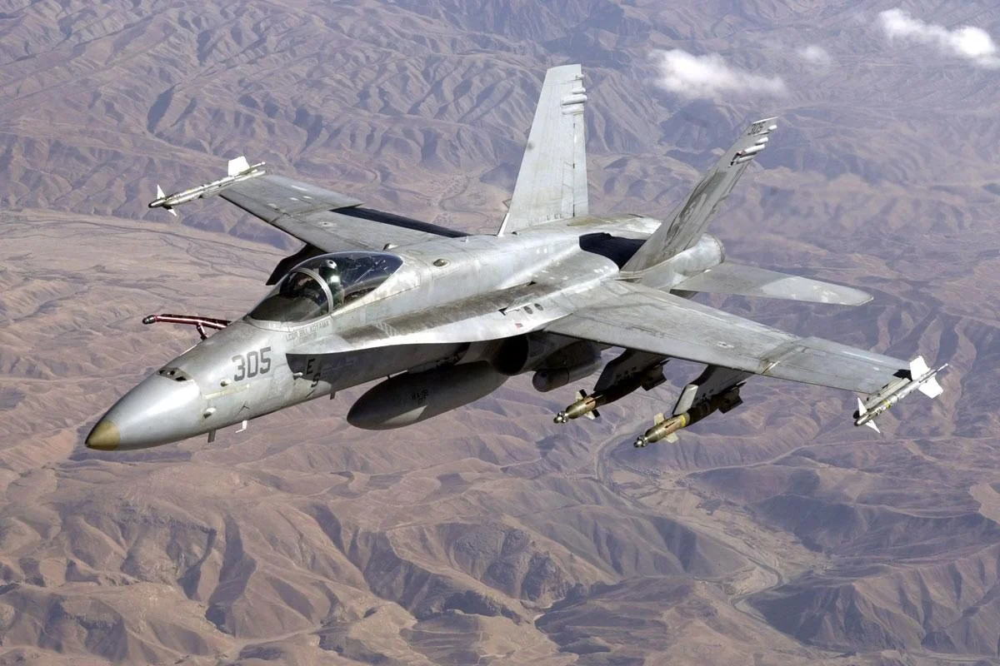

McDonnell Douglas F/A-18 Hornet
Разработчик: Соединённые Штаты Америки, McDonnell Douglas (с 1997 года — Boeing)
Первый полёт: 18 ноября 1978 года
Начало эксплуатации: 7 января 1983 года
Единиц произведено: более 2000 (всех модификаций)
F/A-18 Hornet — это многоцелевой истребитель, разработанный американской компанией McDonnell Douglas (позже слилась с Boeing) и Northrop в 1970-х годах. Он используется как палубный истребитель ВМС США и Корпуса морской пехоты США, а также экспортировался в другие страны.
| Двигатели | Максимальная скорость | Боевой радиус | Практический потолок | Вооружение |
|---|---|---|---|---|
| 2 × General Electric F404-GE-402 | ~1 915 км/ч (1,8 Маха) | ~720 км | 15 000 м | 1× 20-мм M61 Vulcan (6000 выстр./мин) AIM-7 Sparrow, AIM-9 Sidewinder, AIM-120 AMRAAM AGM-65 Maverick, AGM-84 Harpoon, AGM-88 HARM JDAM, Paveway, кассетные и обычные бомбы |
Особенности:
- Палубный самолёт – разработан для взлёта и посадки с авианосцев.
- Многофункциональность – может выполнять задачи истребителя и штурмовика.
- Манёвренность – хорошая аэродинамика и мощные двигатели делают его эффективным в бою.
- Продвинутая авионика – мощные радары и системы наведения.
Развитие: F/A-18E/F Super Hornet
Позже F/A-18 был модернизирован в F/A-18E/F Super Hornet с улучшенными двигателями, большей дальностью и увеличенной полезной нагрузкой. Этот вариант стал основным истребителем палубной авиации ВМС США.